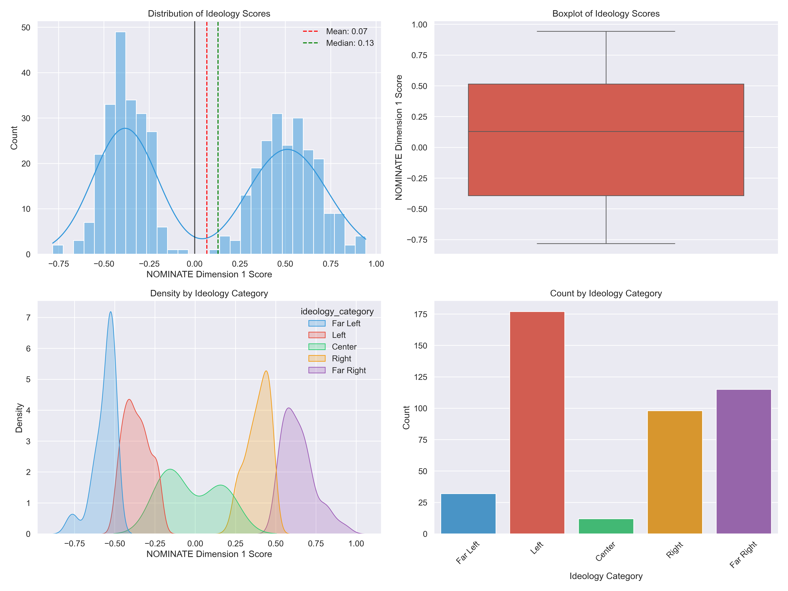
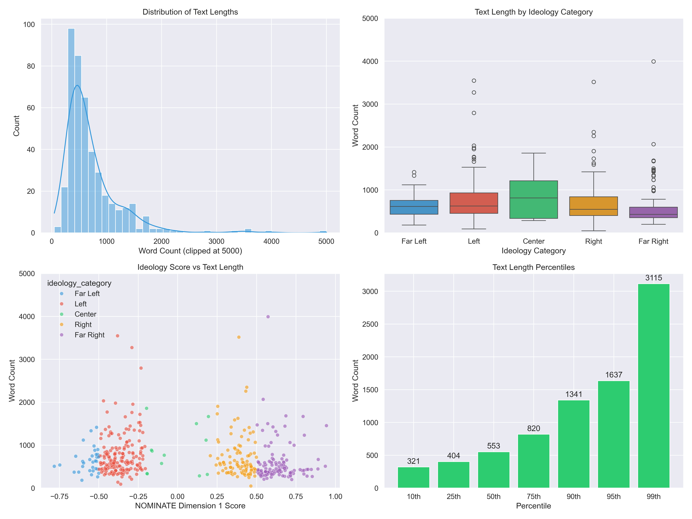
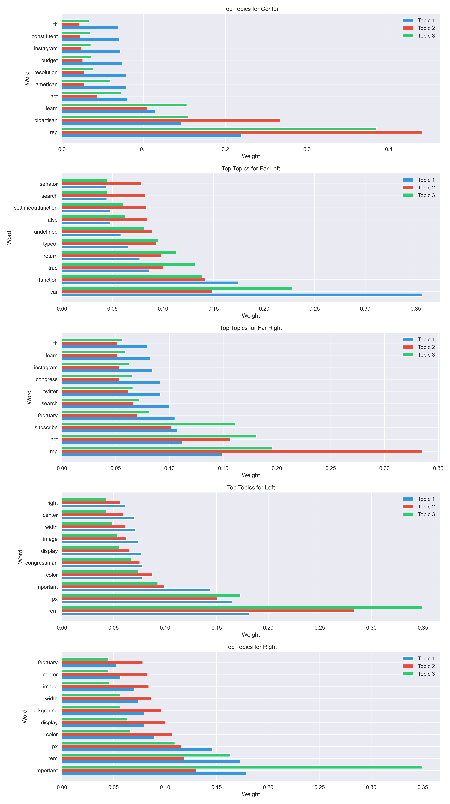
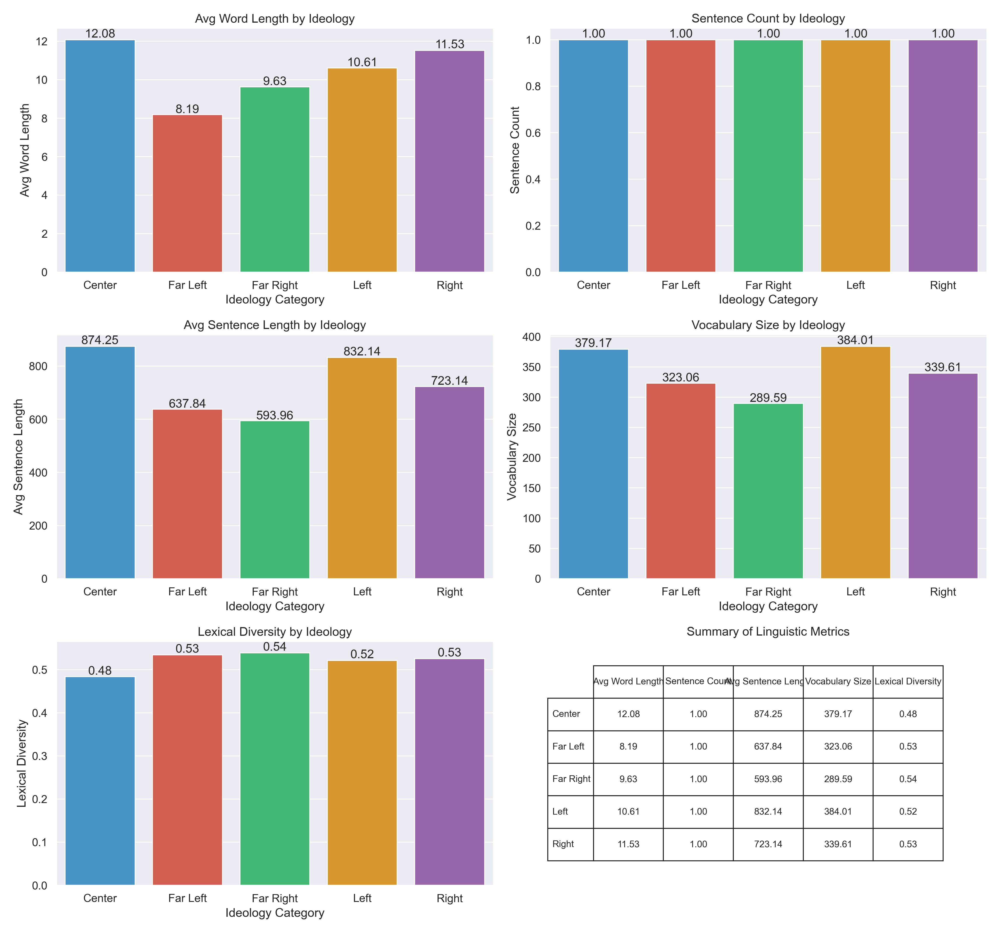

Vocabulary Analysis
Word clouds and top terms for each ideological category.

Total Records: 434
Complete Records: 434
Missing Ideology Scores: 0
Missing Text Data: 0
Mean: 0.0674
Median: 0.1285
Min: -0.7820
Max: 0.9430
Standard Deviation: 0.4727
Mean: 731.25 words
Median: 553.00 words
Min: 47 words
Max: 11141 words
Standard Deviation: 702.75 words
| Category | Count | Percentage |
|---|---|---|
| Far Left | 32 | 7.4% |
| Left | 177 | 40.8% |
| Center | 12 | 2.8% |
| Right | 98 | 22.6% |
| Far Right | 115 | 26.5% |
This section shows the distribution of ideology scores in the dataset.
Analysis of text length and other properties across different ideology categories.
Word clouds and top terms for each ideological category.
Latent Dirichlet Allocation (LDA) results showing main topics for each ideological category.
Comparison of linguistic features across ideological categories.
